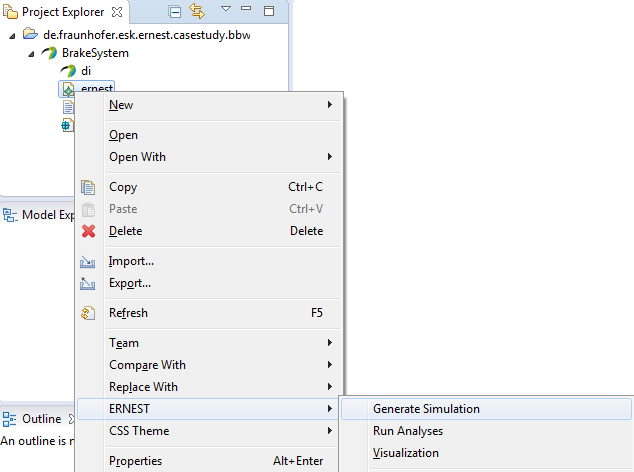
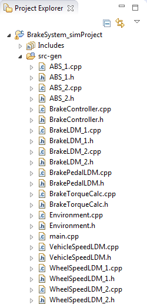
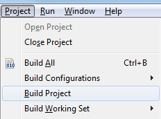
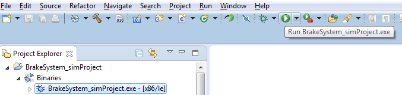
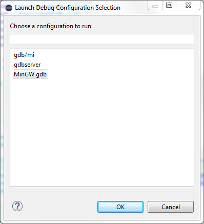
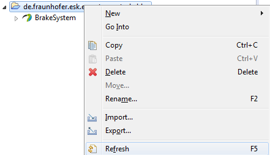
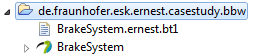

There might be a warning annotated to the project similar to:
Invalid project path: Missing project folder or file: \BrakeSystem_simProject\src-gen\ for Source path.which is a confirmed bug of CDT and can be ignored. You can fix this by just closing and opening the project.


In case the run button is not visible, you can use the context menu of the binary to select Run As > Local C/C++ Application.


